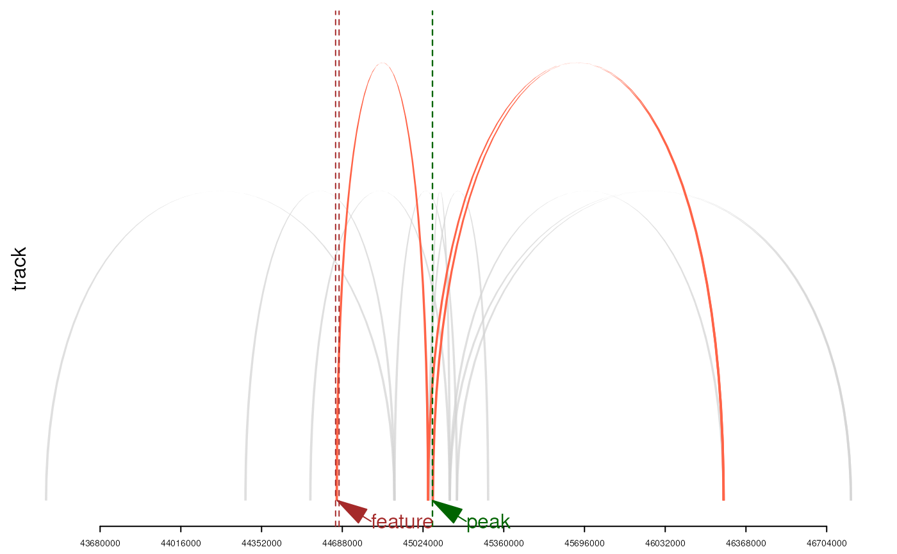

Plot interaction network for visualization
An object of annoLinkerResult output by annoLinker
Number to indicate the event to be plot
Output of the plot.
Colors setting for the plot.
The TxDb and OrgDb object used for annotation plot.
htmlWidget or plots.
anno <- readRDS(system.file('extdata', 'sample_res.rds', package='annoLinker'))
library(org.Dr.eg.db)
#>
library(TxDb.Drerio.UCSC.danRer10.refGene)
n <- 1 #length(anno$annotated_peaks$evidences)
plotEvidence(anno, event=n,
output='htmlWidget')
plotEvidence(anno, event=n,
output='trackPlot')

#> NULL